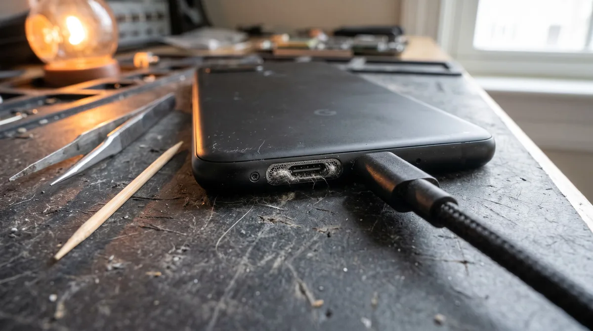
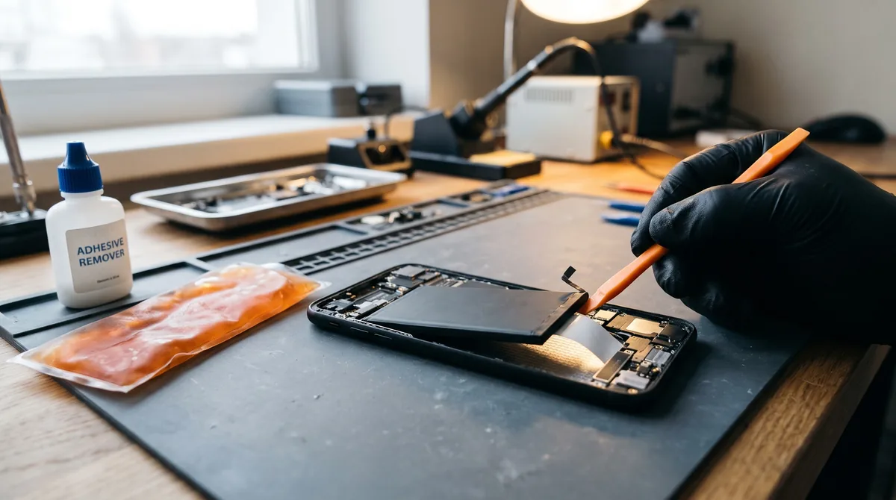
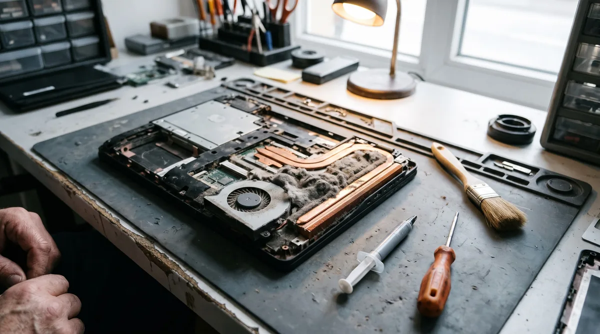
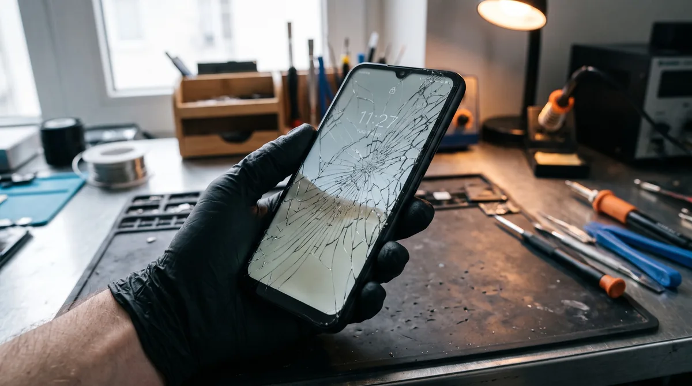
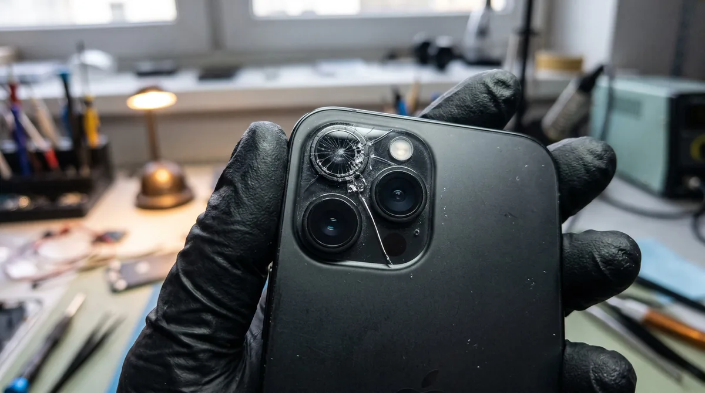

Блог мастера
Полезные статьи о ремонте техники
Разбираем поломки простым языком: что можно проверить самому, когда нужен мастер и как не переплатить за ремонт.

ЗарядкаЗамена разъёма зарядки на телефоне
Как понять, что виноват разъём, когда хватит чистки и что меняют на Android и iPhone.
Читать →
АккумуляторЗамена аккумулятора на телефоне
Когда пора менять батарею, почему нельзя самому и что делать после ремонта.
Читать →
НоутбукиЧистка ноутбука от пыли и замена термопасты
Почему ноутбук греется и шумит, что входит в чистку и почему не помогает пылесос.
Читать →
ЭкранЗамена стекла и дисплея на телефоне
Чем отличаются IPS и AMOLED, оригинал или копия, сколько стоит и сколько ждать.
Читать →
КамераЗамена стекла камеры на телефоне
Почему фото стали мутными и почему нельзя заклеить трещину скотчем.
Читать →Не нашли свою поломку?
Позвоните — проконсультируем бесплатно. Работаем без выходных, с 10:00 до 20:00. Выезд по Мариуполю, в Левобережном районе — бесплатно.